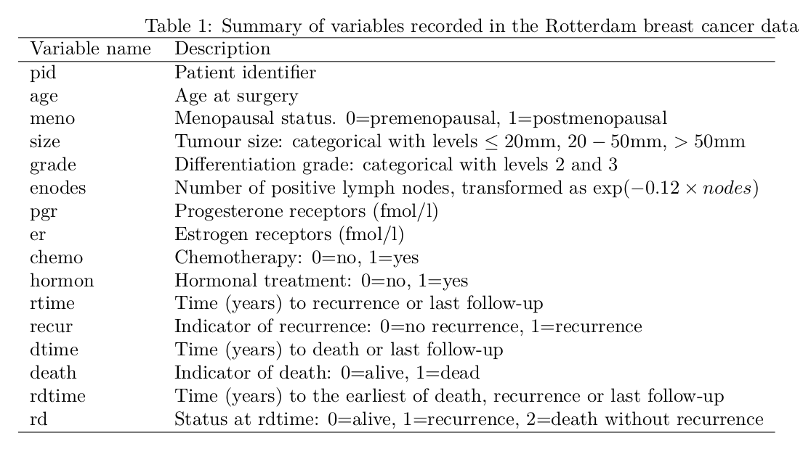
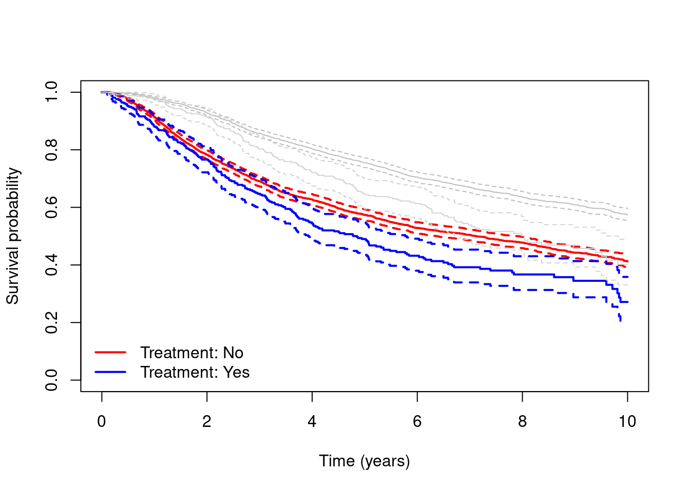
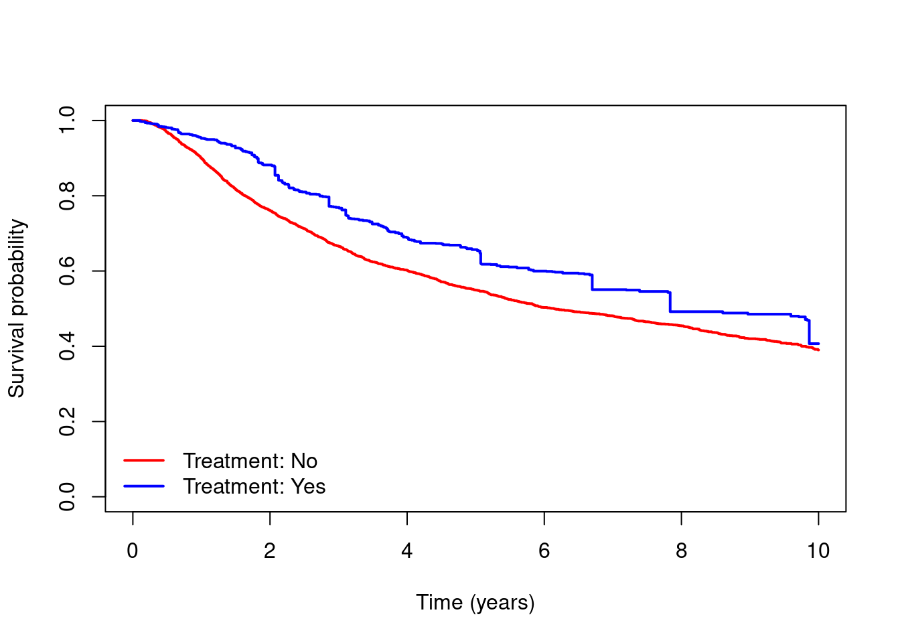
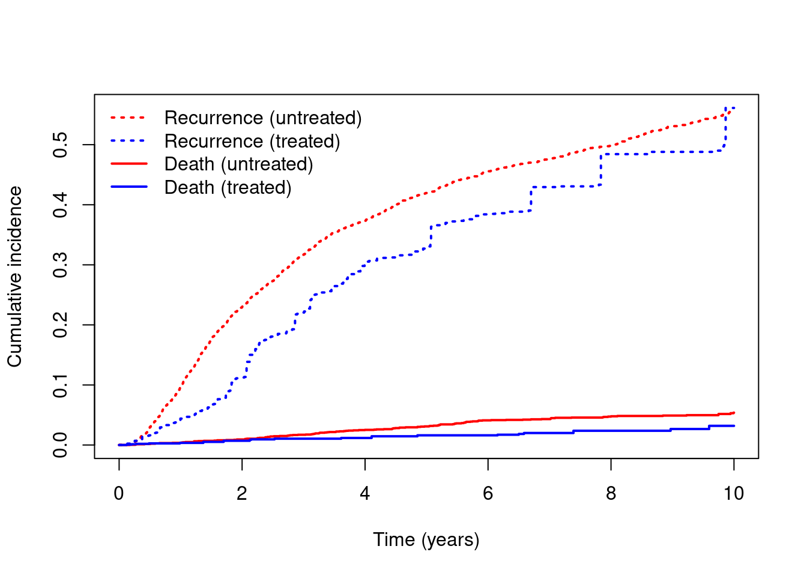
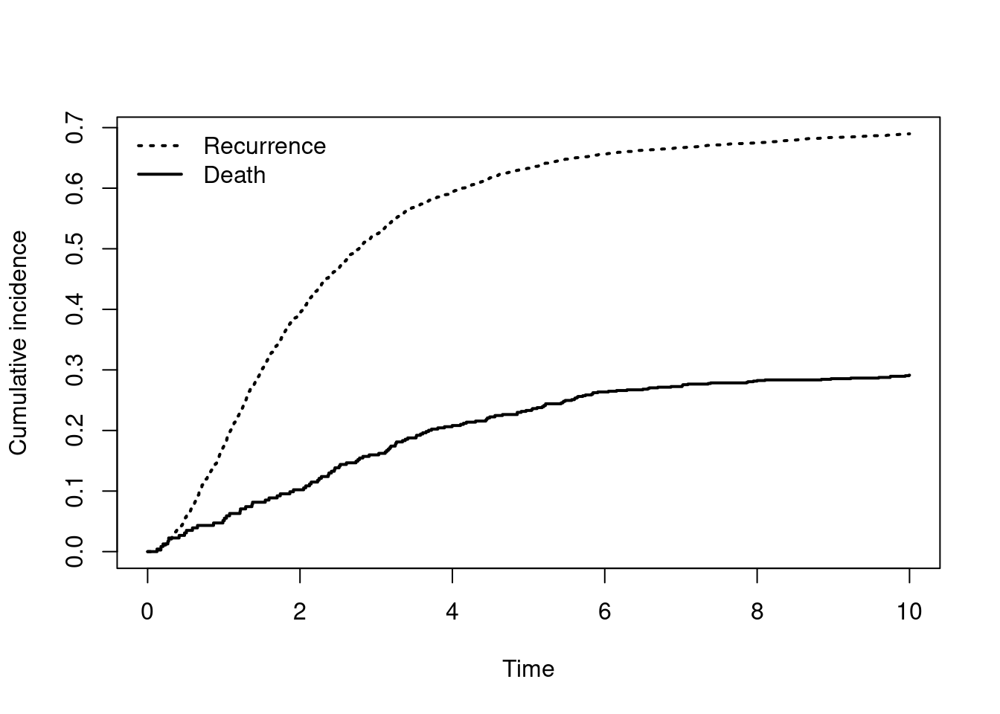
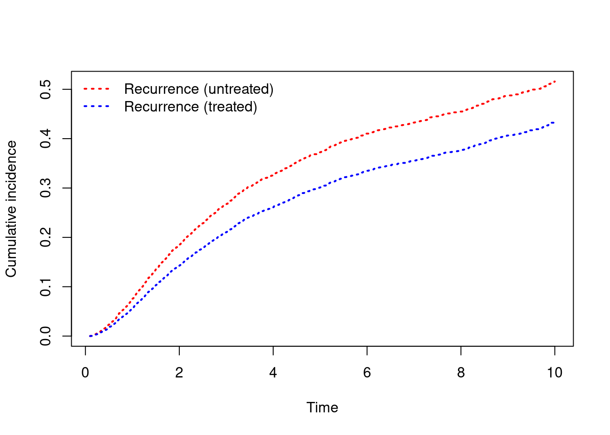

library(survival)
library(boot)
dta = readRDS(file = "data/dta.rds")
dta$hormon = as.factor(dta$hormon)Estimating causal effects on time-to-event outcomes under competing risks
Data
In this practical we return to the ‘rotterdam’ data set, which includes data on individuals who underwent surgery for primary breast cancer between 1978 and 1993, and whose data were recorded in the Rotterdam Tumour Bank. The data include information on treatments received alongside a number of individual characteristics. Individuals were followed up for disease recurrence and death for up to a maximum of 19.3 years. This data set is available as part of the ‘survival’ package in R, and it has been widely used to illustrate survival analysis methods [e.g. see Royston P, Altman D. External validation of a Cox prognostic model: principles and methods. BMC Medical Research Methodology 2013, 13:33].
We will again consider the slightly modified version of the Rotterdam data set in which individual follow-up is recorded in years instead of days, and where we have applied censoring at 10 years. We have also created an additional variable ‘enodes’ which is a transformation of the nodes variable - this transformation has been used in several previous analyses of these data. Some individuals in the original data set have been excluded, as they had recorded death times after they were censored for recurrence, resulting in a final sample size of 2939 individuals.

Aims
The aim is now to estimate the effect of hormone therapy use on time to the first event to occur, of recurrence and death, up to 10 years. As before, we will estimate the population average (marginal) outcomes we would expect if everyone had received hormone therapy (hormon = 1) and if everyone had not received hormone therapy (hormon = 0) using IPTW weighting and standardisation (g-formula), but this time we will focus on estimation on outcomes under competing risk.
Load data and packages
As before, load the data and let the treatment variable (hormon) be a factor variable.
In this practical we will only use the survival and boot packages.
Simple analyses using a composite endpoint
- Obtain and plot un-adjusted Kaplan-Meier survival curves for time to the composite event of recurrence or death, for people who did and did not receive hormone therapy. How does the result compare to the result you got when looking at time to death only? How do you interpret any differences?
# Calculate and plot K-M for time to composite endpoint:
kmc = survfit(Surv(rdtime, rd != 0) ~ hormon, data=dta)
plot(kmc, xlab="Time (years)", ylab="Survival probability",
col=c("red", "blue"), lwd=2, conf.int=T)
legend(x="bottomleft", c("Treatment: No", "Treatment: Yes"),
col=c("red", "blue"), lty=1, lwd=2, bty="n")
# Add grey lines for K-M for time to death only:
km = survfit(Surv(dtime, death) ~ hormon, data=dta)
lines(km, col=c("gray","lightgray"), conf.int=T)
- Now estimate and plot adjusted marginal survival curves for the composite endpoints using the same inverse probability of treatment weights as you made in Exercise 1. Interpret your results.
# Fit model for treatment:
mod.treat = glm(hormon ~ age + meno + size +
as.factor(grade) + enodes + pgr + er +
chemo, data=dta, family="binomial")
# Predict the probability of treatment for each individual:
pred.treat = predict(mod.treat, data=dta, type="response")
# Obtain the weight for each person:
dta$wt = (dta$hormon==1)/pred.treat + (dta$hormon==0)/(1-pred.treat)
# Calculate and plot weighted K-M for time to composite endpoint:
kmc.wt = survfit(Surv(rdtime, rd != 0) ~ hormon, weights=wt, data=dta)
plot(kmc.wt, xlab="Time (years)", ylab="Survival probability",
col=c("red", "blue"), lwd=2)
legend(x="bottomleft", c("Treatment: No", "Treatment: Yes"),
col=c("red", "blue"), lty=1, lwd=2, bty="n")
- Run a test for the difference between composite “survival” curves and interpret the results.
coxph(Surv(rdtime, rd != 0) ~ hormon, weights=wt, data=dta)Call:
coxph(formula = Surv(rdtime, rd != 0) ~ hormon, data = dta, weights = wt)
coef exp(coef) se(coef) robust se z p
hormon1 -0.2258 0.7979 0.0362 0.1437 -1.571 0.116
Likelihood ratio test=39.05 on 1 df, p=4.137e-10
n= 2939, number of events= 1612 Estimating cause-specific cumulative incidence using IPW
From now on, say that the main event of interest is recurrence, with the competing event of death (without recurrence) being present.
- Calculate and plot unadjusted marginal cause-specific cumulative incidence for both recurrence and death without recurrence. How do these curves compare to the plot in Part A 1?
cuminc = survfit(Surv(rdtime, rd, type="mstate") ~ hormon, dta)
plot(cuminc, xlab="Time (years)", ylab="Cumulative incidence",
col=c("red", "blue"), lwd=2, lty=c(3, 3, 1, 1))
legend(x="topleft", c("Recurrence (treated)", "Recurrence (untreated)",
"Death (treated)", "Death (untreated)"),
col=c("blue", "red", "blue", "red"), lty=c(3, 3, 1, 1),
lwd=2, bty="n")
- Calculate and plot adjusted marginal cause-specific cumulative incidence for both recurrence and death without recurrence. How would you describe the total effect of treatment on recurrence? To what degree can there be a indirect effect through the competing event of death without recurrence?
cuminc = survfit(Surv(rdtime, rd, type="mstate") ~ hormon, weights=wt, dta)
plot(cuminc, xlab="Time (years)", ylab="Cumulative incidence",
col=c("red", "blue"), lwd=2, lty=c(3, 3, 1, 1))
legend(x="topleft", c("Recurrence (untreated)", "Recurrence (treated)",
"Death (untreated)", "Death (treated)"),
col=c("red", "blue", "red", "blue"), lty=c(3, 3, 1, 1),
lwd=2, bty="n")
- Run a test for the difference between cumulative incidence of recurrence and interpret the results.
# Create new dataset for the subdistribution hazard:
dta.sub = finegray(Surv(rdtime, rd, type="mstate") ~ ., etype=1, data=dta)
# Run weighted Cox model on subdistribution dataset:
coxph(Surv(fgstart, fgstop, fgstatus) ~ hormon, id=pid,
weight=wt*fgwt, robust=T, data=dta.sub)Call:
coxph(formula = Surv(fgstart, fgstop, fgstatus) ~ hormon, data = dta.sub,
weights = wt * fgwt, robust = T, id = pid)
coef exp(coef) se(coef) robust se z p
hormon1 -0.17199 0.84199 0.03747 0.14621 -1.176 0.239
Likelihood ratio test=21.12 on 1 df, p=4.315e-06
n= 29673, number of events= 1477 - Calculate the absolute difference in five year risk of recurrence between the two treatment groups based on the weighted Kaplan-Meier estimates from the prior exercise. Add bootstrap confidence intervals. How do you interpret the results?
# Calculate difference in cumulative incidence F(t) at t=5 years:
pstate = summary(cuminc, times=5)$pstate
Fdiff = pstate[2,2] - pstate[1,2]
Fdiff[1] -0.09252237# Bootstrap:
fdiff = function(data, indices){
dataset = data[indices,]
# Recalculate weights for each bootstrap sample:
mod.treat = glm(hormon ~ age + meno + size +
as.factor(grade) + enodes + pgr + er +
chemo, data=dataset, family="binomial")
pred.treat = predict(mod.treat, data=dataset, type="response")
data$wt = (dataset$hormon==1)/pred.treat +
(dataset$hormon==0)/(1-pred.treat)
# Calculate weighed difference in cumulative incidence:
cuminc = survfit(Surv(rdtime, rd, type="mstate") ~ hormon, weights=wt, dataset)
pstate = summary(cuminc, times=5)$pstate
return(pstate[2,2] - pstate[1,2])
}
b1 = boot(data=dta, statistic=fdiff, R=100)
b1
ORDINARY NONPARAMETRIC BOOTSTRAP
Call:
boot(data = dta, statistic = fdiff, R = 100)
Bootstrap Statistics :
original bias std. error
t1* -0.09252237 -0.008046092 0.0462806boot.ci(b1, type=c("perc", "norm"))BOOTSTRAP CONFIDENCE INTERVAL CALCULATIONS
Based on 100 bootstrap replicates
CALL :
boot.ci(boot.out = b1, type = c("perc", "norm"))
Intervals :
Level Normal Percentile
95% (-0.1752, 0.0062 ) (-0.1790, -0.0018 )
Calculations and Intervals on Original Scale
Some percentile intervals may be unstable- Repeat exercise 3, but now for the restricted mean (recurrence free) time lost (RMTL) to recurrence after five years. Interpret the results.
# Calculate difference in RMTL at 5 years:
rmtl = summary(cuminc, rmean=5)$table
rmtl n nevent rmean
hormon=0, (s0) 2605 0 3.69900478
hormon=1, (s0) 334 0 4.11459536
hormon=0, 1 2605 1295 1.22911433
hormon=1, 1 334 182 0.84317703
hormon=0, 2 2605 116 0.07188089
hormon=1, 2 334 19 0.04222762RMTLdiff = rmtl[4, 3] - rmtl[3, 3]
RMTLdiff[1] -0.3859373# Bootstrap:
fdiff = function(data, indices){
dataset = data[indices,]
# Recalculate weights for each bootstrap sample:
mod.treat = glm(hormon ~ age + meno + size +
as.factor(grade) + enodes + pgr + er +
chemo, data=dataset, family="binomial")
pred.treat = predict(mod.treat, data=dataset, type="response")
data$wt = (dataset$hormon==1)/pred.treat +
(dataset$hormon==0)/(1-pred.treat)
# Calculate weighed difference in cumulative incidence:
cuminc = survfit(Surv(rdtime, rd, type="mstate") ~ hormon, weights=wt, dataset)
rmtl = summary(cuminc, rmean=5)$table
return(rmtl[4, 3] - rmtl[3, 3])
}
b2 = boot(data=dta, statistic=fdiff, R=100)
b2
ORDINARY NONPARAMETRIC BOOTSTRAP
Call:
boot(data = dta, statistic = fdiff, R = 100)
Bootstrap Statistics :
original bias std. error
t1* -0.3859373 0.01522951 0.1183505boot.ci(b2, type=c("perc", "norm"))BOOTSTRAP CONFIDENCE INTERVAL CALCULATIONS
Based on 100 bootstrap replicates
CALL :
boot.ci(boot.out = b2, type = c("perc", "norm"))
Intervals :
Level Normal Percentile
95% (-0.6331, -0.1692 ) (-0.5762, -0.1107 )
Calculations and Intervals on Original Scale
Some percentile intervals may be unstable- EXTRA: Make a plot of the difference between the cumulative incidence curves from \(t=0\) to \(t=10\) and interpret the results (hint: utilize the
stepfunfunction)
Fa1 = stepfun(cuminc["hormon=1",]$time, c(0, cuminc["hormon=1",]$pstate[,2]), right=T)
Fa0 = stepfun(cuminc["hormon=0",]$time, c(0, cuminc["hormon=0",]$pstate[,2]), right=T)
times = seq(0, 10, by=0.01)
plot(times, Fa1(times) - Fa0(times), type="s", lty=3, lwd=2,
ylab="Cumulative incidence difference", xlab="Time (years)")
Estimating cause-specific cumulative incidence using standardisation (g-formula)
- Fit a Cox proportional hazard model for the cause specific hazard of each event (recurrence and death without recurrence), adjusting for hormon, age, meno, size, grade, enodes, pgr, er and chemo. How would you interpret the output?
c1 = coxph(Surv(rdtime, rd, type="mstate") ~ hormon + age +
meno + size + as.factor(grade) + enodes + pgr +
er + chemo, id=pid, dta)
c1Call:
coxph(formula = Surv(rdtime, rd, type = "mstate") ~ hormon +
age + meno + size + as.factor(grade) + enodes + pgr + er +
chemo, data = dta, id = pid)
1:2 coef exp(coef) se(coef) robust se z
hormon1 -3.016e-01 7.396e-01 8.503e-02 8.880e-02 -3.397
age -1.531e-02 9.848e-01 3.572e-03 3.871e-03 -3.954
meno 1.579e-01 1.171e+00 9.071e-02 9.679e-02 1.632
size20-50 3.114e-01 1.365e+00 5.964e-02 5.975e-02 5.211
size>50 4.991e-01 1.647e+00 9.064e-02 9.883e-02 5.050
as.factor(grade)3 3.454e-01 1.413e+00 6.611e-02 6.478e-02 5.332
enodes -1.929e+00 1.453e-01 1.009e-01 1.185e-01 -16.279
pgr -9.318e-05 9.999e-01 1.073e-04 1.097e-04 -0.849
er -6.956e-05 9.999e-01 1.061e-04 1.119e-04 -0.622
chemo -3.134e-01 7.309e-01 7.336e-02 7.655e-02 -4.095
1:2 p
hormon1 0.000682
age 7.67e-05
meno 0.102761
size20-50 1.87e-07
size>50 4.41e-07
as.factor(grade)3 9.69e-08
enodes < 2e-16
pgr 0.395650
er 0.534111
chemo 4.23e-05
1:3 coef exp(coef) se(coef) robust se z p
hormon1 -0.3382738 0.7130000 0.2657453 0.2598436 -1.302 0.19297
age 0.1346077 1.1440878 0.0122801 0.0124025 10.853 < 2e-16
meno -0.5160600 0.5968676 0.4601891 0.4658301 -1.108 0.26794
size20-50 0.1388994 1.1490085 0.2007498 0.2038521 0.681 0.49564
size>50 0.2992439 1.3488385 0.2873388 0.2851762 1.049 0.29403
as.factor(grade)3 -0.0180504 0.9821115 0.1990415 0.1960833 -0.092 0.92665
enodes -1.1990698 0.3014745 0.3621725 0.3346957 -3.583 0.00034
pgr 0.0001656 1.0001656 0.0003013 0.0002582 0.641 0.52133
er -0.0002871 0.9997130 0.0003064 0.0003764 -0.763 0.44563
chemo 0.0429707 1.0439073 0.4871352 0.4957296 0.087 0.93092
States: 1= (s0), 2= 1, 3= 2
Likelihood ratio test=851.2 on 20 df, p=< 2.2e-16
n= 2939, number of events= 1612 - Use the Cox model you just fitted to predict the event probabilities from \(t=0\) to \(t=10\) for an individual with hormon, age, size and grade at the same values as the first individual in the dataset (pid=1) and all other covariates equal to 0.
nd = expand.grid(hormon = dta$hormon[1], age = dta$age[1], meno = c(0),
size = dta$size[1], grade = dta$grade[1], enodes = c(0),
pgr = c(0), er = c(0), chemo = c(0))
cuminc.pred = survfit(c1, newdata=nd)
plot(cuminc.pred, lwd=c(2, 2), lty=c(3, 1), ylab="Cumulative incidence", xlab="Time")
legend(x="topleft", c("Recurrence", "Death"), lty=c(3, 1), lwd=c(2, 2), bty="n")
- Calculate marginal adjusted cumulative incidence curves for recurrence by standardisation (g-formula). How do the resulting curves compare to the inverse probability weighted curves produced earlier?
Hint: Predict cumulative incidence as in the previous exercise, for every individual in the dataset, fixing treatment to 1 and then, again, to 0.
# Predict cumulative incidence for hormon=1 and hormon=0, with observed values of L:
nd1 = dta
nd0 = dta
nd1$hormon = "1"; nd0$hormon = "0"
cuminc.1 = survfit(c1, newdata=nd1)
cuminc.0 = survfit(c1, newdata=nd0)
# Average over individual predictions and plot:
plot(cuminc.0$time, rowMeans(cuminc.0$pstate[,,2]), type="s", col="red", lwd=2, lty=3,
xlab="Time", ylab="Cumulative incidence")
lines(cuminc.1$time, rowMeans(cuminc.1$pstate[,,2]), type="s", col="blue", lwd=2, lty=3)
legend(x="topleft", c("Recurrence (untreated)", "Recurrence (treated)"),
col=c("red", "blue"), lwd=2, lty=3, bty="n")